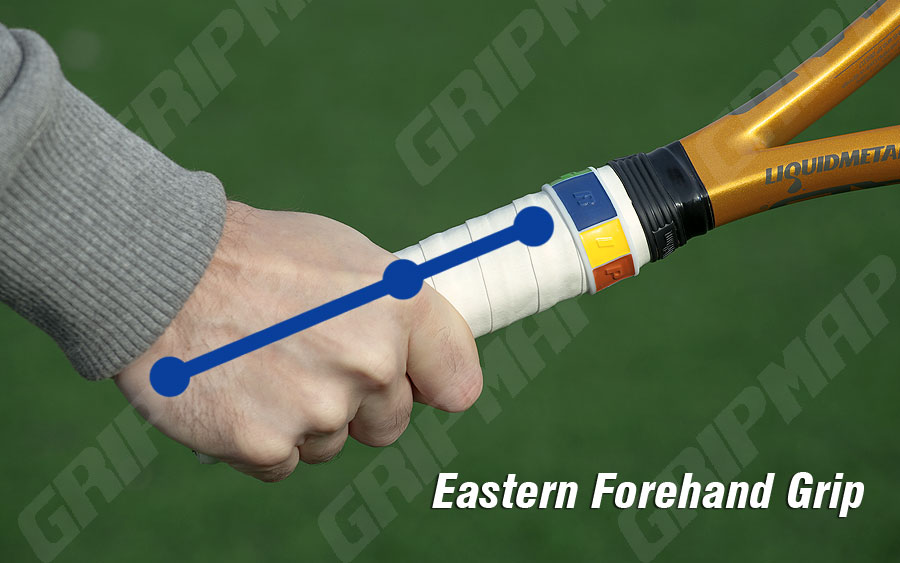
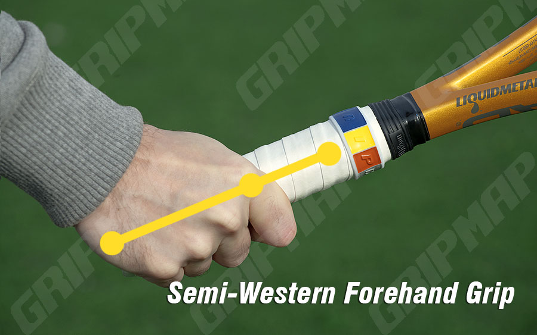
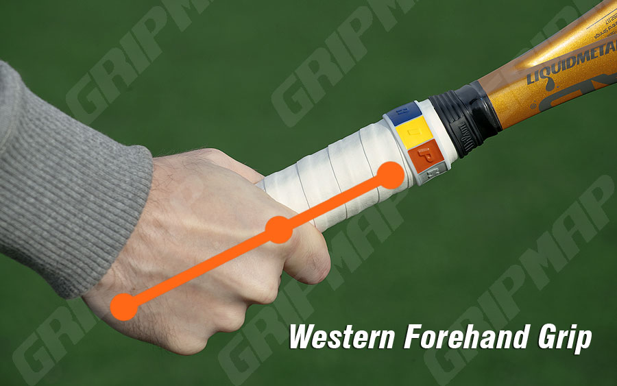

Many of us that play tennis, or are aspiring tennis players, know that it can be difficult to get started with a new tennis skill. Whether it be a forehand, single-handed backhand, two-handed backhand, slice, and the many variations of serves, it takes practice and repitition to master. But before we can head out to our nearest court and train, we need to know the basics of what we're trying to achieve. Today I will give you the fundemantal building blocks to achieving a buttery smooth forehand that might not reach the levels of Federer and Nadal but will make you competitve against your friends and/or your local club. This is a more in-depth article so if you'd like the shortened version, feel free to visit this INSERT SHORTENED ARTICLE HERE.
First we need to know what exactly is a forehand. A forehand is a tennis motion (or "stroke") where you hold the racquet towards the bottom of the grip, with your dominant hand. Once you have that achieved, you take the racquet back and continue with a swing forward to make contact with the tennis ball. Don't worry if that explanation is too vague, we'll go more in detail further in the article.
Let's take a step back to the part where to grip that racquet. One might imagine that it can be gripped whichever way but there are actually three forehand grips (well, only two that I would recommend). Remember that the motion of the forehand is the same regardless of the grip. These are the grips in no particular order:
These names might sound confusing but they are much easier to understand than how they sound. I will give the easy explanation on how to achieve the grips since I'm sure you aren't intersted in drawing two dots on your palm and counting the bevels on your grip to match. But if you are interested in such an explanation, here is the link.
This is a grip that is used by arguably the best tennis player in history, Roger Federer! The eastern forehand is a more general grip that doesn't provide the most spin or the flattest stroke but it does ensure the greatest variety in your shots. If you want, you can up the rpm's (spin) on your strokes or you can hit a flatter (less or no spin) forehand. To hold the racquet with an eastern grip, drop the racquet to the floor and then pick it up and spread your pointer and middle finger a little bit. You'll see that the top side of your palm (right under where your fingers start) will be in contact with the widest bevel (side) of the grip. Another way to verify if you're doing it right is to see if your pointer finger knuckle is in-line with that wide bevel, like this:

If you're still confused then I'd recommend checking out this quick 3 minute video
This is a grip that is used by arguable the second and third best tennis players in history, Rafael Nadal and Novak Djokovic! The semi-western grip is still versatile but is more for those that want more spin. You can still hit relatively flatter forehands but it won't be as easy, compared to the eastern grip. To hold the racquet with a semi-western grip, hold the racquet is you won't a fry pan. Once you achieve that, if you can move your racquet side to side as if you were moving some perfectly crips small potatoes on fry pan, then you have achieved the grip. It should look like this:

If you're still confused and want a visual representation, check out this video
This is a grip that is really only used by clay court players that love to hit a heavy amount of spin on the ball because more spin on a clay court ensures more balls in and a higher bounce. I would highly advise against the use of this grip because it's strenuous on your wrist and elbow. However, I'll still explain how to achieve this grip. The grip of a tennis racquet has two opposing bevels that are thin (not to be confused with the wide bevels). If you put the top side of your palm (right before your fingers start) on one of those opposing thin bevels, then you've achieved the western forehand. It should look like this:

If you're still confused and want a visual representation, check out this video